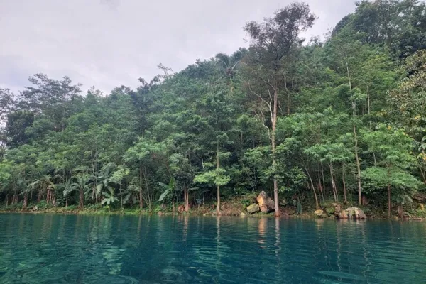
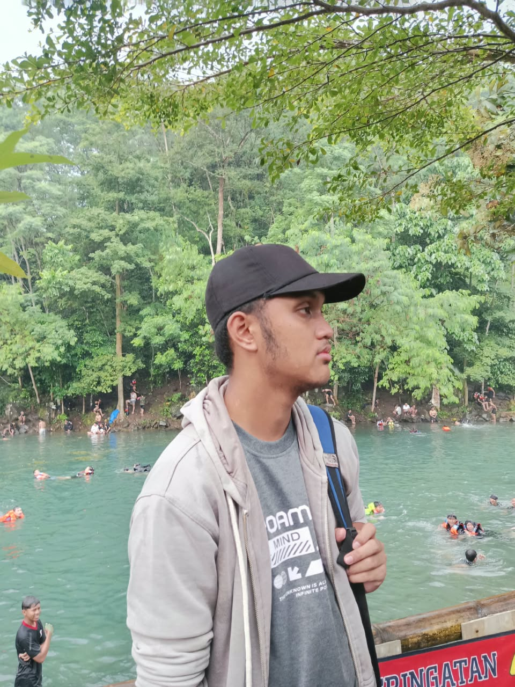

01
Menikmati Pemandangan
Luangkan waktu untuk menikmati warna air dan suasana alam di sekitar kawasan wisata.
Sejenak menjauh dari keramaian, menikmati kejernihan air, keindahan alam, dan ketenangan yang sulit dilupakan.
Keindahan warna air alami
Menikmati ketenangan alam
Jelajahi Majalengka


Talaga Nila merupakan salah satu destinasi wisata alam yang dikenal dengan daya tarik airnya yang jernih dan suasana lingkungan yang asri di Kabupaten Majalengka, Jawa Barat.
Tempat ini dapat menjadi pilihan untuk menikmati pemandangan alam, mengabadikan momen bersama orang terdekat, serta melepas penat dari aktivitas sehari-hari.
Lihat pesona Talaga Nila melalui keindahan air dan panorama alam yang memikat.
Ganti gambar contoh dengan foto asli Talaga Nila agar informasi dan galeri sesuai kondisi di lokasi.
Beberapa ide aktivitas untuk menikmati perjalanan ke Talaga Nila.
Luangkan waktu untuk menikmati warna air dan suasana alam di sekitar kawasan wisata.
Abadikan momen perjalanan dengan latar pemandangan alam yang indah.
Rasakan suasana yang berbeda dan nikmati waktu bersama keluarga atau teman.
Sebelum berkunjung, pastikan aktivitas yang kamu rencanakan diperbolehkan pengelola. Patuhi petunjuk keselamatan dan jaga kebersihan lingkungan.
Rencanakan kunjungan agar pengalaman berwisata menjadi lebih nyaman dan menyenangkan.
Pastikan jam buka dan tarif terbaru kepada pengelola.
Bawa perlengkapan secukupnya dan gunakan alas kaki yang nyaman.
Jangan membuang sampah sembarangan atau merusak lingkungan.

Gunakan peta berikut untuk melihat lokasi dan merencanakan perjalananmu.
Desa Lengkong Kulon, Kecamatan Sindangwangi, Kabupaten Majalengka, Jawa Barat.
Periksa kembali titik tujuan di peta sebelum memulai perjalanan.

Mahasiswa Teknik Informatika · Semester 3
Saya Raihan Alfattah, mahasiswa semester 3 yang membuat website promosi wisata Talaga Nila Majalengka sebagai media informasi dan pengenalan potensi wisata alam daerah melalui teknologi web.
Kembali ke Beranda ↑Temukan informasi wisata, nikmati panorama alam, dan rencanakan kunjunganmu ke Talaga Nila.
Lihat Lokasi Wisata ↗